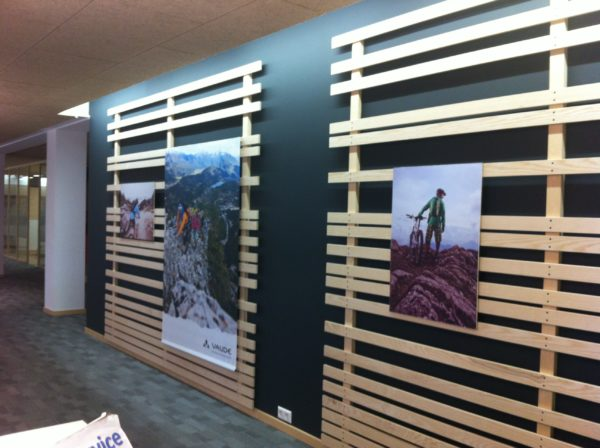

Mrs. Paperless auf der Walz – es geht los!
Meine Wanderschaft beginnt!
Meine Motivation, auf die Walz zu gehen, habe ich ja bereits ausführlich beschrieben. Nach all den Wochen der Vorbereitung kann ich es kaum fassen, dass es morgen mit meiner ersten Walzstation losgehen wird.
Starten werde ich bei der InterNations GmbH in München. Die Mitarbeiter sind sicherlich genauso gespannt auf mich wie ich auf Sie.Bei einem Teammeeting morgen früh lerne ich meine Kollegen für die kommende Woche kennen. Bei den Gedanken daran fällt mir auf, dass ich nach langer Zeit mal wieder durchgängig mit einem Team arbeiten werde und frage mich, wie sich das wohl anfühlen wird.
Auf meine erste Station freue ich mich auch, weil mir dieses Unternehmen bereits im Vorfeld als schnell, unkompliziert und neugierig aufgefallen ist und mir dies auch von meinem Kollegen Ralf Westphal bestätigt wurde, dem sie ebenfalls mal eine Walzstation angeboten hatten. Aufgrund ihres kosmopolitischen Hintergrundes ist InterNations besonders offen dafür, mich auf meiner Wanderschaft mitzunehmen.
Zur InterNations GmbH sei kurz erläutert, dass sie die erste internationale Online-Gemeinde ist, die ihr Angebot an im Ausland lebende und arbeitende Leute richtet, also an die sogenannten Expats. Die drei deutschen Gründer stellten in ihrer eigenen Zeit als Expats immer wieder fest, dass ihnen eine solche Plattform fehlte, um sich schnell in einem neuen Land orientieren und vor allem neue Kontakte vor Ort herstellen zu können. Im beruflichen Alltag fehlt dazu bekanntlich oft die Zeit und Muße. Das Unternehmen ist seit seiner Gründung schnell gewachsen, 50 Mitarbeiter aus verschiedenen Ländern arbeiten inzwischen mit, und Unterstützung durch unterschiedliche Botschaften und Konsulate ist gesichert. Der Bedarf einer solchen Online-Gemeinde bestand also tatsächlich – der Erfolg gibt den Gründern recht.
Mir persönlich gefällt das Selbstverständnis als Netzwerk, das auf Vertrauen basiert und jedem Mitglied den Austausch mit Gleichgesinnten ermöglicht und das nicht nur lokal sondern global. Nun ist es an mir, deren Büroorganisation auf zukunftsfähige Beine zu stellen. Typisch für schnell wachsende Unternehmen ist, dass das Tagesgeschäft und die notwendige Strategie zu einer wachstumsfähigen Organisation, hier vor allem des Backoffices, in den Hintergrund rückt. So freut sich besonders die Büroleiterin Frau Fellner auf mich und unsere gemeinsame Woche. Und ich freue mich auf ein multikulturelles Team, mit dem die Kommunikation schon im Vorwege so gut funktioniert hat, denn aus meiner Sicht ist die Sensibilität, Offenheit und Bereitschaft der Mitarbeiter bereits erkennbar, sie haben verstanden, dass die internen Abläufe besser strukturiert werden müssen.
In diesem Sinne heißt es ab morgen ganz im Sinne von InterNations „Connecting global minds“!
Weitere Artikel

Meine letzte Walzstation – schee war’s
Der Organizer verabschiedet sich von einer insgesamt wunderbaren Walz. Meine letzte Walzwoche liegt hinter mir und die Eindrücke zu Vaude in Tettnang klingen noch nach. Mein erster Eindruck Schon am ersten Tag traf ich auf eine …
Meine Wanderschaft nähert sich dem Ende
Sie erinnern sich noch? Drei Walzstationen habe ich auf meiner Wanderschaft seit Herbst 2013 absolviert, nun folgt nächste Woche die 4. und damit auch letzte. Noch einmal zur Erinnerung: Besonders erfreulich finde ich die …